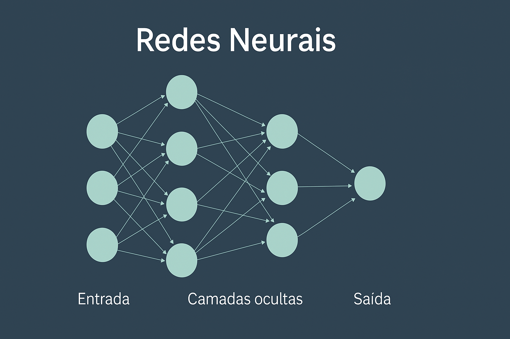

Inteligência Artificial e Pesquisa Histórica
Oficina III
Prof. Eric Brasil
terça-feira, 8 de abril de 2025
O que é Inteligência Artificial?
Alguém arrisca uma definição?
Russel e Norvig (2004): quatro abordagens
🧠 Pensar como seres humanos
> “Máquinas com mentes, no sentido total e literal.” Haugeland (1985)
🤖 Agir como seres humanos
> “A arte de criar máquinas que executam funções que exigem inteligência humana.” Kurzweil (1990)
Russel e Norvig (2004): quatro abordagens
🧠⚙️ Pensar racionalmente
> “Estudo das computações que tornam possível perceber, raciocinar e agir.” Winston (1992)
⚙️ Agir racionalmente
> “Estudo do projeto de agentes inteligentes.” Poole et al. (1998)
📌 As abordagens se dividem entre:
- 🧪 Enfoques empíricos e humanos (interdisciplinares)
- 🔢 Enfoques lógico-racionalistas (computação, matemática)
Alan Turing e a pergunta fundamental
“Can machines think?” Computing Machinery and Intelligence (1950)
Essa pergunta é substituída por outra:
Uma máquina pode imitar um ser humano a ponto de enganar um observador?Essa proposta dá origem ao que hoje chamamos de Teste de Turing.
Quem foi Alan Turing?
- Alan Mathison Turing (1912–1954)
- Matemático britânico, pioneiro na computação;
- Criou o conceito de máquina universal – base dos computadores;
- Atuou no projeto Enigma, quebrando códigos nazistas;
- Propôs o Teste de Turing (Jogo da Imitação, 1950);

Perseguição estatal
- Em 1952, Turing foi condenado por homossexualidade, então considerada crime no Reino Unido;
- Foi submetido à castração química como pena alternativa à prisão;
- Morreu em 1954, em circunstâncias interpretadas como suicídio.
🏳️🌈 Reconhecimento póstumo
- Em 2009, o governo britânico emitiu um pedido público de desculpas;
- Em 2013, recebeu perdão póstumo oficial da Rainha Elizabeth II;
- Hoje é símbolo da luta por direitos LGBTQIA+ e liberdade científica.

O Jogo da Imitação
🎮 Três participantes:
- A: um homem
- B: uma mulher
- C: um interrogador (humano), isolado dos demais
✉️ Comunicação apenas por texto.
C tenta descobrir quem é A e quem é B.
A máquina entra em cena
🧠 Substituímos um dos humanos (A ou B) por uma máquina.
❓ O interrogador consegue descobrir quem é a máquina?
📌 Se não consegue distinguir com frequência maior que o acaso…
… então a máquina “pensa” — no sentido funcional proposto por Turing.
Importância do Jogo da Imitação
✅ Evita debates abstratos sobre “consciência” ou “alma”
✅ Foca em comportamento observável
✅ É um marco na história da inteligência artificial
“Estamos interessados não no que a máquina é,
mas no que ela faz.” Turing (1950)
🎬 O teste Voight-Kampff em Blade Runner
🎬 O teste Voight-Kampff em Blade Runner
- Utilizado para identificar replicantes (androides avançados);
- Mede reações emocionais (expressões faciais, dilatação da pupila, etc.);
- Distingue humanos de máquinas pela capacidade empática;
- Foco: resposta afetiva e moral.
Qual a diferença entre esse teste e o Jogo da Imitação de Turing?
Inteligência Artificial Generativa em 2025
A IA Generativa é um ramo da IA capaz de criar conteúdos novos, como:
- 📝 Textos
- 🎨 Imagens
- 🗣️ Áudio
- 📹 Vídeo
- 🧠 Códigos de software
Características Gerais da IAG
- Baseia-se em modelos avançados que identificam padrões em grandes volumes de dados.
- Aprende com dados massivos
- Produz conteúdo original e coerente
- Funciona com base em probabilidades, sem consciência
- Pode alucinar (gerar erros ou invenções convincentes)
- Requer validação humana constante
O que são LLMs?
📚 LLM = Large Language Model (Modelo de Linguagem de Grande Escala)
São redes neurais treinadas com bilhões de palavras para:
- Entender e gerar linguagem natural
- Realizar tarefas complexas de texto (resumos, respostas, análises)
Exemplos: GPT-4, Claude, Gemini, LLaMA
O que são redes neurais?
🧠 Inspiradas no cérebro humano, redes neurais são estruturas matemáticas que:
- Recebem entradas (textos, imagens, números)
- Processam essas entradas em camadas de nós (neurônios artificiais)
- Aprendem a reconhecer padrões e gerar saídas (respostas)
📈 Com o tempo, ajustam seus pesos internos para melhorar os resultados.
➡️ Redes neurais profundas (deep learning) são a base dos LLMs
quanto mais camadas, mais complexas as tarefas que podem realizar.
Como funciona uma rede neural?
Esquema de rede neural: Cada nó aprende a reconhecer padrões e contribui para a geração de uma resposta final.
Como funciona o treinamento?
🧪 Fase 1: Pré-treinamento
- Exposição massiva a textos da web, livros, códigos, etc.
- O modelo aprende padrões estatísticos da linguagem
🛠️ Fase 2: Ajustes (fine-tuning)
- Ajuste supervisionado com dados anotados
- Adaptação a contextos específicos (ex: setor público, jurídico)
🎯 Fase 3: Alinhamento final (instruction tuning / RLHF)
- Intervenção humana para ajustar comportamento, ética e segurança
- Ensina o modelo a seguir instruções e evitar respostas perigosas ou enganosas
Treinamento de LLMs
Como se estrutura um chatbot com IA?
- Modelo base (LLM): entende e gera respostas
- Interface (chat): onde ocorre a interação
- Regras e filtros: para segurança e adequação
- Memória contextual (opcional): para lembrar o que foi dito
💬 O chatbot parece “inteligente”, mas apenas prevê a próxima palavra provável
Onde rodam os chatbots? A infraestrutura dos LLMs
🖥️ Modelos como o ChatGPT são executados em megaestruturas computacionais com:
- Milhares de GPUs especializadas (ex: NVIDIA A100)
- Ambientes distribuídos em data centers de alta performance
- Refrigeração avançada e uso intensivo de energia
🏢 A OpenAI utiliza a infraestrutura da Microsoft (Azure AI Supercomputing Center)
📍 Exemplo: um supercomputador com 10.000 GPUs conectadas por redes de alta velocidade
Qual o custo disso?
💰 Treinar um modelo como o GPT-4: +100 milhões de dólares
💡 Manter um modelo como o ChatGPT online:
- Altíssimo consumo de energia (relação direta com o uso)
- Custos operacionais por milhão de tokens gerados
- Impacto ambiental relacionado à pegada de carbono digital
⚠️ Usar IA generativa tem um custo invisível ao usuário, mas real
Os limites físicos da IA: o caso Ghibli e os servidores da OpenAI
🎨 Em abril de 2025, viralizou o uso do GPT-4o para gerar imagens no estilo do Studio Ghibli
🚨 Resultado: sobrecarga nos servidores da OpenAI
🔥 Sam Altman afirmou que os “GPUs estão derretendo” (figurativamente…)
🖥️ Por quê?
Fonte: Digital Trends
O custo invisível de gerar imagens com IA
💡 Cada imagem gerada = energia + processamento + refrigeração
⚠️ Geração massiva = aquecimento global digital
🌍 O impacto ambiental da IA Generativa
- ⚡ Eletricidade → Treinamento e uso em tempo real
- 💧 Água → Refrigeração de data centers
- 🧱 Recursos naturais → Mineração para GPUs
📉 Exemplo: O treinamento do GPT-3 consumiu 1.287 MWh (equivalente a 120 casas por 1 ano)
🔥 Emissões estimadas: 552 toneladas de CO₂
Fonte: MIT News (2025)
A “nuvem” é física – e insustentável
🏭 Data centers consomem mais energia do que muitos países
📊 Em 2022, eles usaram 460 TWh – entre Arábia Saudita e França
📈 Projeção para 2026: 1.050 TWh (5º maior “país” consumidor)
💧 Cada kWh consome cerca de 2 litros de água para refrigeração
⚠️ A IA que usamos hoje compromete a biodiversidade e intensifica a crise climática.
Modelos Fechados vs Modelos Abertos
🔒 Modelos Fechados
- Desenvolvidos por grandes empresas (OpenAI, Google)
- Acesso via APIs
- Pouca transparência (caixa-preta)
- Exemplos: GPT-4, Claude, Gemini
🔓 Modelos Abertos
- Código-fonte acessível e personalizável
- Executáveis localmente
- Maior controle e privacidade
- Exemplos: LLaMA 3 (Meta), Mistral, Sabia-7B (Maritaca)
Como escolher entre modelos?
📌 Depende de:
- ⚙️ Infraestrutura disponível
- 🛡️ Requisitos de segurança e privacidade
- 🎯 Nível de personalização desejado
- 💰 Custo e acessibilidade
📍 Modelos abertos são preferíveis quando há:
✔️ Necessidade de controle
✔️ Regras rígidas de privacidade
✔️ Desejo de transparência e auditabilidade
IA Generativa ≠ IA Geral
🤖 IA Generativa (IAG)
- Especializada em criação de conteúdos
- Usa padrões aprendidos em grandes volumes de dados
- Não tem consciência nem compreensão
🧠 IA Geral (AGI)
- Habilidade de aprender qualquer tarefa cognitiva
- Equivalente (ou superior) à inteligência humana
- Ainda é teórica
E a Singularidade?
🌌 Singularidade Tecnológica
- Futuro hipotético onde a IA supera amplamente a inteligência humana
- Mudanças imprevisíveis e irreversíveis na sociedade
⚠️ Não é consenso entre especialistas
⚠️ Mais presente em narrativas de ficção e futurologia
Alucinações na IA Generativa
🧠 A IAG pode gerar respostas incorretas ou inventadas, ainda que pareçam confiáveis.
Causas comuns:
- Perguntas ambíguas
- Dados incompletos ou enviesados
- Falta de atualização do modelo
- Tendência a “completar” informações
🔎 Exigem validação humana constante.
Direitos Autorais e Propriedade Intelectual
📚 Modelos de IAG podem reproduzir:
- Trechos de obras protegidas
- Estilos e estruturas de autores reais
- Conteúdos derivados sem autorização
⚖️ Riscos:
- Plágio
- Violação de direitos autorais
- Responsabilidade legal da instituição ou autor
Vazamento de Dados e Acessos Indevidos
💾 Riscos principais:
- Restituição acidental de dados sensíveis no output
- Armazenamento inadequado das interações
- Compartilhamento em servidores externos
🔐 Medidas preventivas:
- Não inserir dados reais em plataformas não homologadas
- Preferir modelos abertos ou locais
- Aplicar anonimização e mascaramento de dados
Viéses na IA Generativa
🔍 Tipos de viés identificados:
- Viés de contexto: falha ao interpretar corretamente
- Viés de automação: confiança cega nas respostas
- Viés de representatividade: grupos sub-representados
- Viés de exclusão: ausência total de certos grupos
💡 Causa: dados de treinamento com desigualdades
⚠️ Consequência: reprodução de discriminação e injustiças
IA Generativa na vida acadêmica
📚 Potenciais usos:
- Escrita de rascunhos e revisão textual
- Assistência na leitura e análise de textos
- Geração de ideias, resumos, estruturas
- Tradução e adaptação linguística
- Criação de materiais didáticos
⚠️ Requer uso ético, crítico e com transparência.
Princípios básicos de bom uso
✅ Revisar tudo o que a IA produz
✅ Identificar claramente o que foi gerado por IA
✅ Validar dados, fontes e argumentos
✅ Manter a autoria humana e a responsabilidade final
❌ Nunca publicar textos gerados por IA sem revisão
❌ Não usar IA para fraudar ou ocultar autoria
❌ Não buscar respostas para temas totalmente desconhecidos
Questões Éticas
⚖️ Ética no uso da IAG envolve:
- 📌 Conformidade com a LGPD e direitos autorais
- 🔍 Transparência sobre o uso de IA
- 🧩 Inclusão e respeito à diversidade
- 🧠 Evitar reprodução de preconceitos e estereótipos
- 🗣️ Assumir responsabilidade pelo conteúdo final
🧭 Ética = julgamento contextual, responsabilidade e cuidado
Como usar?
💬 Use com clareza e propósito:
- Planeje o que deseja gerar (defina objetivos)
- Elabore bons prompts (comandos claros)
- Revise criticamente os resultados
- Cite o uso da ferramenta, quando apropriado
📎 “Parte do conteúdo deste trabalho foi gerado com o auxílio de IA generativa.”
Exemplos de uso da IAG na vida acadêmica
📌 IAG pode ser usada para otimizar tarefas sem substituir o trabalho intelectual:
- 📖 Assistente de leitura
- 📝 Revisor de textos
- 📊 Apoio à análise de dados
- 👨🏫 Preparação de aulas
- 🌍 Tradução de materiais
Assistente de leitura
📘 Aplicações:
- Geração de resumos iniciais
- Reformulação de trechos difíceis
- Sugestões de questões a partir do texto
⚠️ Cuidados:
- Não substituir a leitura crítica
- Verificar fidelidade ao texto original
Revisor de textos
📝 A IA pode:
- Corrigir gramática e ortografia
- Sugerir reformulações
- Ajudar na normalização de referências
⚠️ Boas práticas:
- Revisar sempre as sugestões
- Comparar versões para aprender com o processo
- Não publicar sem passar por revisão crítica
Análise de dados e visualização
📊 Aplicações:
- Geração de gráficos e tabelas
- Sugestões de interpretação inicial
- Apoio a análises qualitativas com IA (ex: codificação)
⚠️ Cuidados:
- Validar os resultados com conhecimento de método
- Cuidado com “interpretações fabricadas”
Preparação de aulas e materiais didáticos
👨🏫 IAG pode ajudar a:
- Gerar planos de aula
- Criar perguntas e atividades
- Adaptar linguagem para diferentes públicos
⚠️ O conteúdo gerado deve:
- Ser adaptado ao contexto da turma
- Passar por revisão ética e pedagógica
Tradução de materiais acadêmicos
🌍 IAG pode:
- Ajudar na tradução de artigos e documentos
- Facilitar a escrita em segunda língua
⚠️ Cuidados:
- Evitar traduções literais
- Revisar tecnicamente o vocabulário
- Verificar coerência textual
RAG e pesquisa histórica
📚 RAG = Retrieval-Augmented Generation (Geração Aumentada por Recuperação)
🔍 Combina:
- Um modelo LLM (como GPT)
- Com uma base de dados própria ou curada (textos, documentos, arquivos)
🧠 Resultado:
- Respostas mais precisas e contextualizadas
- Acesso a informações não presentes no modelo original
RAG aplicado à pesquisa com fontes
👩🏫 Exemplos na área de História:
- Interrogar acervos documentais digitais
- Explorar padrões em jornais históricos
- Analisar cartas, atas, relatórios com auxílio da IA
- Buscar referências cruzadas em bases massivas
RAG aplicado à pesquisa com fontes
🛠️ Exige:
- Curadoria da base de dados
- Técnicas de pré-processamento (OCR, limpeza)
- Infraestrutura para acoplar modelo + repositório
Vantagens e limitações do RAG
💡 Ideal para pesquisadores que trabalham com grandes corpora textuais e fontes digitais
✅ Vantagens:
- Geração baseada em dados reais e específicos
- Evita alucinações comuns em modelos genéricos
- Permite reprodutibilidade e auditoria
⚠️ Limitações:
- Requer infraestrutura técnica
- Necessita validação humana
- A eficácia depende da qualidade da base consultada
RAG na pesquisa histórica: um exemplo prático
📄 Dataset: 10 mil mensagens extraídas da API do Telegram
📍 Tema: discurso de grupos de extrema direita sobre o golpe militar de 1964
🎯 Objetivo: investigar formas de negacionismo histórico
💡 Vamos usar um sistema RAG com modelo aberto, executado em servidor local.
Arquitetura RAG com modelo aberto
🧠 Modelo: LLaMA 3 ou Mistral (Hugging Face)
💾 Execução local com llama.cpp, text-generation-webui ou Ollama
🔍 Repositório vetorial: FAISS ou ChromaDB
⚙️ Framework: LangChain ou Haystack
Nenhum dado é enviado para a nuvem: o processamento ocorre no próprio servidor.
Etapa 1: Vetorização e Indexação
🔣 As mensagens são convertidas em vetores numéricos (embeddings) com:
- Modelos como
sentence-transformers,Instructor,GTE
- Fragmentação em blocos (chunks) com metadados (ex: data, autor, grupo)
📦 Vetores são armazenados num índice vetorial (FAISS/ChromaDB)
🔁 Isso permite buscas por similaridade semântica, e não por palavras-chave
Etapa 2: Prompt ancorado em dados reais
🧾 Consulta:
> “Como as mensagens desse grupo negam que houve um golpe militar em 1964?”
🔄 Processo: 1. A pergunta é convertida em embedding 2. Recuperamos os n trechos mais similares 3. Geramos o prompt final:
Contexto:
<mensagens recuperadas>
Pergunta:
Como as mensagens expressam negacionismo histórico sobre 1964?Etapa 3: Resposta estruturada (formato JSON)
📤 Para análise automatizada e reuso acadêmico, configuramos o retorno em JSON:
{
"resposta": "As mensagens negam o golpe ao chamá-lo de revolução...",
"fontes": [
{"mensagem": "...", "data": "2023-04-01", "grupo": "Grupo A"},
{"mensagem": "...", "data": "2023-04-02", "grupo": "Grupo B"}
],
"categoria": "Negacionismo histórico",
"evidencia": "linguagem revisionista, referências a 'revolução de 64'"
}🧩 Isso permite análises qualitativas, categorização e visualização posterior.
Diagrama ilustrando o fluxo de um sistema RAG para análise de mensagens sobre o golpe de 1964, com vetorizaçāo, consulta semântica e geração de resposta com base em dados reais.
Eric Brasil | Entre em contato | CCLHM00114 - Introdução à História Digital